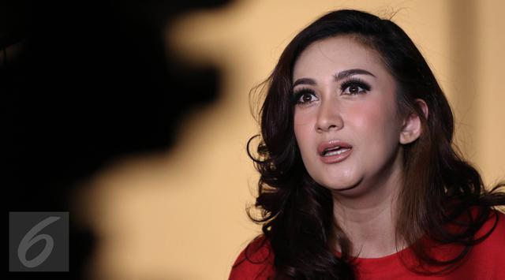

MALEM MINGGU
Luna MAYA
indonesia

Luna began her career as a model. Her first acting job was a supporting role in the film 30 Hari Mencari Cinta (2004). This is Luna's first role as an antagonist. Although a small role in the film, Luna was considered a success. This was followed by a supporting role in Brownies in 2005. She has appeared in Indonesian advertising campaigns for Lux, XL and Toshiba.[1] Read More
Nafa Urba
Indonesia
Nafa mengawali keriernya di dunia hiburan Indonesia dari menyanyi. Kemunculan Nafa di jalur musik slow rock seolah menjadi generasi penerus artis legendaris Nike Ardilla. Saatnya pun tepat, sesaat setelah meninggalnya rocker asal Bandung tersebut. Bahkan Deddy Dores, pria yang kerap menciptakan lagu untuk Nike juga membuatkan lagu untuknya.[1] File...Read More